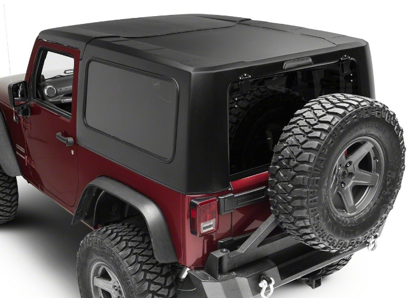

Soft Top Replacement - The pros of Hard top vs soft top convertibles
Which convertible motor vehicle do you prefer when you want a convertible top? Convertible hard tops are a popular choice among automotive enthusiasts, while convertible soft tops are more common in the daily driver market. Hard tops are more popular due to their functionality, while soft tops are preferred primarily because of the look.
Convertible vehicles may have either a hardtop or a soft top for a roof. Regarding the hardness of the top, does it influence the choice between a soft top and hard top? The correct answer isn't always simple to determine. Carmakers have to consider a number of factors when choosing what type to install on a convertible's roof. A buyer's decision to purchase a convertible will depend upon the advantages and costs of each form of roof.
HARD TOP: THE SOLID OPTION
Lopping off the roof of a car to make it convertible is not beneficial in its structural strength. The chassis needs to be strengthened to make up for the lack of a roof. A hard top is able to help mitigate this problem. Even once the roof is fixed (or shut), the entire structure will be safer. However, a hardtop only adds more weight and vehicle strengthening elements relative to the value of the other components.
Hard Top Pros:
- Can give you both coupe and convertible in one car
- More insulated and quieter on the go.
- More solid and secure.

SOFT TOP: THE GENTLER TOUCH
Soft top convertibles are less secure because of the fabric roof. Manufacturers have considered this, though most have done so. Convertibles and roadsters have mechanisms that will pop-up if the vehicle overturns. It prevents people from being crushed. In terms of passenger insulation, soft top roofs can be extremely effective.
When they're made up of various layers, they can dampen a lot of road noise when the roof is closed. In addition to hardtops, they're also much speedier than traditional tops. They can be neatly folded to fit into the overhead storage and take up less space when the roof is open. Soft tops have less complications than hard tops. So, they make up less weight.
Soft Top Pros:
- Can look/feel more luxurious, too.
- Can be deployed/closed faster than a hard top.
- Takes up less space, thus enhancing practicality.
Conclusion
Which type of convertible is better, a hard top or soft top? The answer is simple, it depends. Each has its benefits and drawbacks, and in the end, cost, location and personal preference will determine which option is best for you.